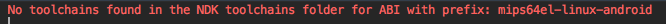
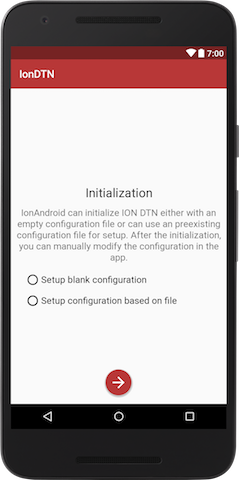
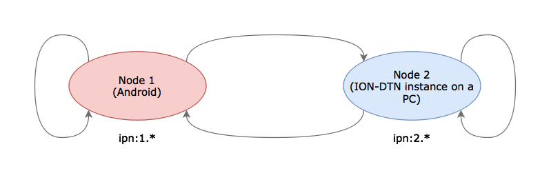
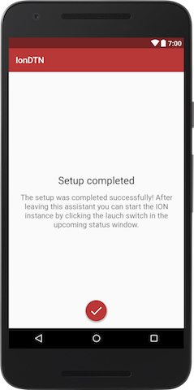
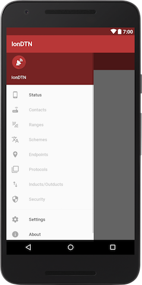

IonDTN Setup
Besides creating an own application, we also need to have the IonDTN provider application installed and set up on the Android device.
IonDTN installation
If you have the IonDTN application already installed on your device, just make sure that the app version is compatible to this documentation. Otherwise you might use the provided interface in a wrong way.
If you haven't installed the IonDTN application yet, you probably want to build and deploy it yourself. In order to do so, just open the IonDTN project located in arch_android directory of the ION-DTN archive in Android Studio. Due to Android Studio's feature detection, it will ask you for permission to install all required SDKs and NDKs. Please install all these packages, connect your Android device and then proceed by pressing the Run 'app' icon in the toolbar:

Android Studio will build the app, install it on your device and open it.
You should be greeted by the following screen of the application setup:

Note:
If you encounter error like No toolchains found in the NDK toolchains folder after installing all required SDKs and NDKs as detected by Android Studio's feature detection, the appropriate version of NDK has to be installed on the development machine to build the provider app. The error may look like this:

In order to install the appropriate version of NDK, download the working older version of NDK from here (Android NDK, Revision 17c (June 2018) has been working fine.) Find your own local Android SDK location; you can check the location of the SDK directory itself viaAndroid Studio -> Preferences... -> Appearance & Behavior -> System Settings -> Android SDK -> Android SDK Location field near the top of the panel.
IonDTN setup
Now we have to configure the app and the underlying ION-DTN instance.
Node Number
First, we have to select a node number:

Just choose "1" in order to ensure compatibility with the configuration file used in all subsequent steps.
Setup Type
After pressing the arrow button, you have to select one of the two setup options:

The options are characterized as follows:
- Empty Configuration: The all necessary daemons and services are started, but initially no contacts, ranges, etc. are created. The user has to use the IonDTN's GUI to set these up.
- Configuration based on
.rcfile: The user can select an.rcfile during the setup process and the configuration of that file is copied into the app configuration. Only the node number is overwritten. This overwriting allows the usage of the same configuration file for multiple devices.
For our "Hello World" project, please choose "Setup configuration based on file" and proceed by taping on the arrow button.
Permission
Depending on the Android version of your device and your security settings, you might be asked to give IonDTN the permission to access the devices external memory (which is the the memory that is accessible by the user and all other applications). Grant the permission and tap the arrow button to proceed.
Select Setup File

In the upcoming dialog you have to select an appropriate configuration file. For the purpose of the "Hello World" project, please modify the linked configuration file android_node.rc, copy it to your device and select it in the file selection dialog.
The following modifications are necessary:
- Assign a static IP address to your device (or use the already via DHCP assigned one, however, this might cause malfunction when a new IP address is assigned). Here is the way to assign static ip for your android device.
- Update both the in-/outducts and the plan details to correspond to the topology and your IP addresses.
The topology for our test is as follows:

You can use the linked pc_node.rc file to setup an ION-DTN file on your development machine or another computer.
Please refer to the ION-DTN configuration for details on how to configure an ION node.
Again, tap the arrow button in the IonDTN application and the app perform the setup of the node.
Note:
If you are using the linked configuration files: android_node.rc (Node 1) & pc_node.rc (Node 2), make sure to change the ip addresses in the configuration files to the ip addresses of your devices. The following changes are required in android_node.rc and pc_node.rc respectively.
# FIXME the IP address has to be changed to your network structure
a induct tcp <android_node_ip>:4556 tcpcli
# FIXME the IP address has to be changed to your network structure
a outduct tcp <android_node_ip>:4556 tcpclo
# FIXME the IP address has to be changed to your network structure
a outduct tcp <pc_node_ip>:4556 tcpclo
s
## end bpadmin
## begin ipnadmin
# FIXME the IP address has to be changed to your network structure
a plan 1 tcp/<android_node_ip>:4556
# FIXME the IP address has to be changed to your network structure
a plan 2 tcp/<pc_node_ip>:4556
## end ipnadmin
# FIXME the IP address has to be changed to your network structure
a induct tcp <pc_node_ip>:4556 tcpcli
# FIXME the IP address has to be changed to your network structure
a outduct tcp <pc_node_ip>:4556 tcpclo
# FIXME the IP address has to be changed to your network structure
a outduct tcp <android_node_ip>:4556 tcpclo
s
## end bpadmin
## begin ipnadmin
# FIXME the IP address has to be changed to your network structure
a plan 1 tcp/<android_node_ip>:4556
# FIXME the IP address has to be changed to your network structure
a plan 2 tcp/<pc_node_ip>:4556
Finish setup
If the setup succeeded (i.e. the configuration file was consistent), you will see the following screen:

Congratulations, IonDTN Setup is now complete. Click on the button to leave setup and you will be redirected to the main status screen of the application.
Start/Stop ION-DTN

On the main status screen you can start and stop the underlying ION-DTN instance. Just press the switch in the top right corner and ION-DTN will start. The startup process will take some time, but you will get notified when the instance is started and ready to use. You can also follow the log messages that appear in the log output view whenever functions and deamons are invoked. Besides the in-app status information there is also a persistent notification.
The persistent notification serves two purposes:
- It ensures that the user is aware that ION-DTN is running in the background and that takes some resources.
- It prevents the service and the ION-DTN instance to get killed by the Android operating system. Android has a rigorous resource management and stops applications that are running in the background and still claiming memory and cpu cycles. However, in the case of the IonDTN provider application the app has to run continuously to ensure that bundles can be received at any time. By displaying the notification to the user (i.e. "starting the service of the application in the foreground" in Android's terms) the likelihood of the Android OS killing IonDTN is negligible.
Please start the ION instance before continuing in order to use it with DtnHelloWorld.
In-App configuration
After starting the ION-DTN instance, you can swipe right from the left side of the screen to open up the main navigation drawer. In this drawer you can select the various configuration elements to review and change the configuration of the node.

Although not necessary for our project, you can have a look what options are available there. Furthermore, in the "Settings" menu you can change some default values and reset the application if necessary (i.e. to load a different initalization .rc file).